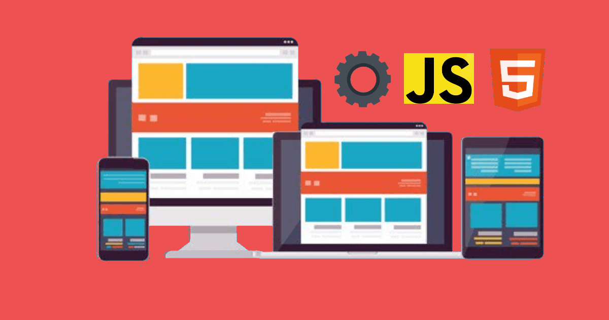
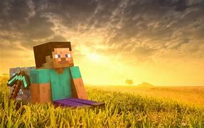
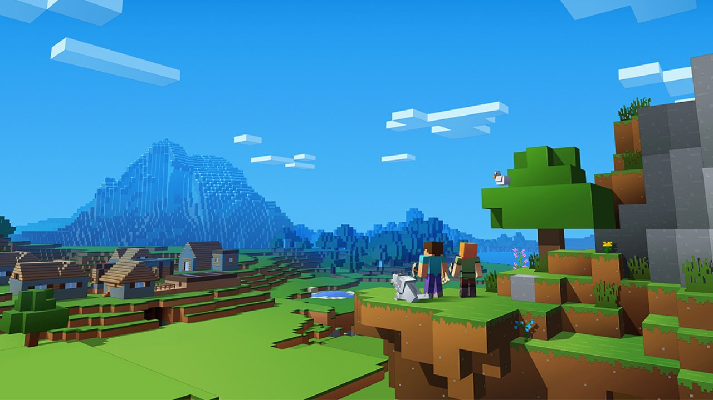

Avisos:
- Em Breve novas atualizações no site.
- Este site ainda pode sofrer alterações pois não está 100% completo!
Olá meu nome é Kainan, mas sou conhecido como Na18k. Desenvolvedor em formação em Front-End, e em breve em muitas outras linguagens de progamação.
Sou um jovem chamado Kainan Henrique, tenho 16 anos, e sou do Brasil. Sempre tive o interesse em aprender progamação, e no momento estou aprendendo Font-End na Alura.

Tudo começou em 2013 onde eu conheci o maravilhoso jogo Minecraft na escola, no onde eles estavam nos computadores, eu sem saber o que se tratava eu jogava sem saber a tal complexidade e a infinidade de possibilidades existentes naquele jogo, com o tempo me distanciei do Minecraft, mais ele marcou minha vida, e o nunca esqueci depois de um longo período, meu interesse por tecnologia aumentou, foi aí que ganhei o minha primeira forma de acessar a 'internet', foi aí que descobri o YouTube, algo que não me chamou tanta a atenção de início, até eu ver aquele maravilhoso jogo que havia visto anos atrás, e então já estando um pouco mais experiente, comecei a acompanhá-lo, mas infelizmente ainda não podendo jogá-lo, foi aí que depois de muito, muito tempo, enfim de todas as cópias do mesmo jogo, consegui joga-lo novamente após anos, que havia jogado pela primeira vez e isso me encantou, e com o passar do tempo jogando, fui ganhando experiência, e enfim me interessar por jogar com outros jogadores em multiplayer, aí que muita coisa começou a mudar, pois, em multiplayer as possibilidades aumentavam, pois, nos mesmos haviam plugins, que modificaram então o estilo de jogo, e isso me interessou, eu sabia que os mods do jogo podiam fazer algo surpreendente, não é atoa que o Minecraft é um dos jogos com mais mods no mundo, e sabia que o mesmo era bastante flexível com isso, daí comecei a mexer com servidor, mexendo com o sistema Bukkit, e spigot, que possibilitam criar servidores com plugins foi aí que entrei numa das partes da programação, que foi quando comecei a configurar plugins e programá-los para que então pudessem modificar o jogo, havia criados muitos servidores de diferentes modos, mas aquilo era mais um passatempo do que algo que um dia poderia publicar, mais a cada projeto eu ficava melhor, a resolver erros no console, arrumar plugins traduzi-los, e diversa coisa possíveis de acontecer;

mais isso eu pensei que não seria o bastante a minha vontade de conhecer mais e fazer algo mais ousado estava crescendo, foi aí que me interessei em criar jogos, mas ainda não sabia enfim programar, e o dispositivo que uso, não possibilitam tal ato grandioso, mas foi aí que conheci o Blender, onde me aprofundei durante o tempo, e aprendi Logic Bricks, algo de conexão o que possibilitou fazer os projetos no Blender funcionarem, foi aí que meu outro passatempo surgiu, criar projetos no Blender, mais como era um passatempo os projetos tiveram o mesmo destino que os servidores de Minecraft que havia criado anteriormente, apenas ficando no computador, com o passar enfim isso se cessou um pouco, pois não podia ousar tanto assim, foi aí que acabei voltando apenas a jogar, mais com o tempo isso tornou-se inviável, pois meus próprios pais começaram a não permitir mais eu jogar, e ter algo relacionado ao jogo, como eles mesmo diziam era algo, que podia prejudicar-me, mesmo assim quem nunca faz o que não era né, quando os pais proíbem os filhos fazem escondido de qualquer forma foi aí com o tempo isso também tornou-se inviável devido à escola e que meu computador já estava ficando debilitado com tempo, e havia deixado de lado, até que devido à Pandemia de 2020 que ocorreu estávamos presos em casa daí um amigo de escola chamado João, e eu decidimos jogar aquele mesmo jogo chamado Minecraft, como o meu amigo só possuía celular tivemos que jogar por lá, foi aí que coloquei umas das minhas experiências em prática, a de criar servidor,

pois só seria possível jogarmos se tivéssemos um, então coloquei em prática o que havia aprendido, criei um servidor simples mais isso já foi o suficiente para aquela vontade voltou, aquela que desejava mais do que havia para saber, foi aí que me interessei pelo PocketMine, era quase igual ao Bukkit e o Spigot que havia no Minecraft Java (Versão para computador) daí em diante que a vontade de voltar com meus antigos projetos, então comecei a voltar a mexê-lo neles novamente no computador, ressuscitando projetos antigos, mas como é o ser humano, sabemos como é, sempre anseia por mais, e mais, foi daí que meu interesse por programação surgiu, mas não havia a oportunidade de aprender, foi aí que procurei algumas formas de aprender, programação em geral não só para criar um jogo e nem plugin mais sim, me possibilitar fazer diversas coisas, além disso, sempre ir além, de fato aprendi algumas coisas, com o passar do tempo, mas ainda era pouco não possuía tanto tempo como antes e meus pais não viam tanto assim com bons olhos ficar no computador o dia inteiro e quem veria não é mesmo? Nesta pandemia a escola se revolucionou, tendo que usar o Ensino à Distância (EAD), com isso tive que secar um pouco meus projetos, foi aí que surgiu uma oportunidade, sendo o Programa Edutech, um programa criado com parceria da Alura, onde possibilitou aprender programação, e me interessei, eu já havia visto a plataforma da Alura antes e tinha me interessado bastante, mas não possuía tal oportunidade até o momento, foi aí que me inscrevi para o Programa e hoje estou aprendendo HTML5, CSS, JavaScript, algo novo e que estou me divertindo fazendo coisas que antes não sabia fazer, por exemplo, esse site que estão vendo foi feito através desse curso, e estou até o momento, até hoje (17/08/2021), e no futuro tenho como sempre tive a curiosidade de aprender e me aprofundar mais em outras linguagens e muitas outras possibilidades muito além.
Desde o Minecraft até o exato instante eu tive muitos momentos maravilhosos e espero ter mais no futuro.
- Kainan Henrique C. dos Santos
Ka 1223

A organização "Ka 1223", criada por Kainan em 4 de Julho de 2021, atravez da plataforma GitHub, onde a mesma tem o objetivo de desenvolvimento em geral.